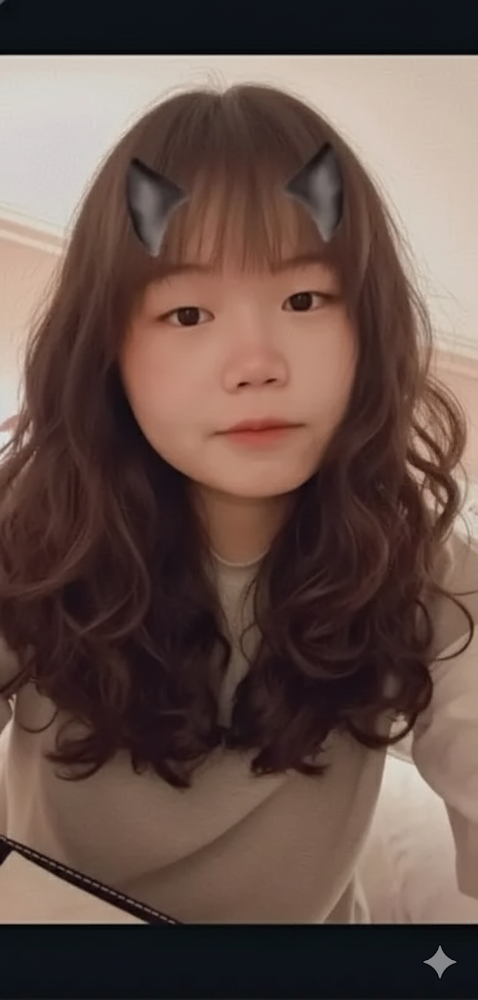

AI生圖(個人照)
這張照片展示了一位戴著可愛耳朵濾鏡的女孩，擁有自然捲曲的長髮，穿著簡單的白色長袖衣物，表情柔和、純真，帶著輕鬆的氛圍，顯示出她親和、隨和的一面。
在每一滴淋下的雨中，找到屬於自己的光
我是宥淋，5月15日出生的金牛座，畢業於中寮國中。個性雖然有些內向，卻喜歡與人交流、分享想法。在學習與生活中，我總希望能吸收各種實用技巧，讓自己持續成長。就像雨中尋光，我相信每一次努力，都是照亮前方的一道微光。
這張照片展示了一位戴著可愛耳朵濾鏡的女孩，擁有自然捲曲的長髮，穿著簡單的白色長袖衣物，表情柔和、純真，帶著輕鬆的氛圍，顯示出她親和、隨和的一面。